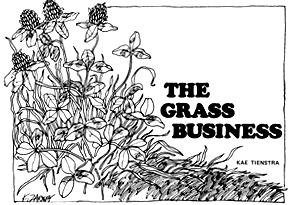
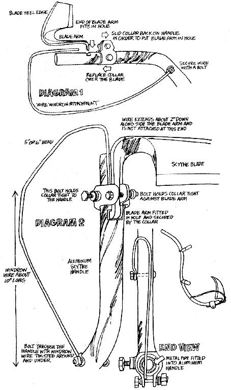
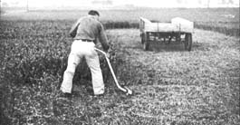
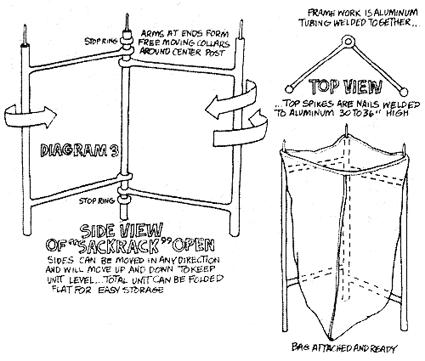
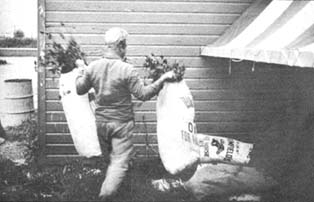

It's 4 A.M. in the deserted stable area of a large thoroughbred race track. Except for the monotonous drone of night insects and the occasional trill of a waking bird, the area is silent. Then, almost imperceptibly a slowly moving car and trailer creep between the rows of horse stables. Shadowy figures move from the trailer to the stables with full bags slung otter their shoulders like summertime Santas.
Despite the early hours, the men described above actually have an interesting and satisfying "down home" business going for them. They're delivering fresh-cut clover to the owners of race horses . . . and a like operation can net you $1,000-$3,000 for under 400 hours of summer work.
The "grass business"-as it was dubbed long agowas created in 1926 by my father-in-law, John Tienstra. Alone or in partnership with others, he ran such an operation each summer until 1965 . . . and every medium to large race track in the country can support at least one similar enterprise today.
The grass business is not for everybody. It entails ungodly hours, hard work, threats from bumblebees and lightning bolts . . . and little glory. Then again, if you like the idea of being your own boss while you work in rhythm with Mother Earth, the establishment of your own clover runs might be just what you're looking for. If there's a race track within a 50-mile radius of your home or homestead, you're sitting on a potential grass business . . . and that potential is growing every year. At one time, prestige racing (which means big money which means free-spending owners) was mostly limited to thoroughbreds. Now that the "big time" racing of standardbreds, Appaloosas, Arabians and quarter horses is becoming more popular, however, the demand for fresh-cut-and-delivered clover is showing a corresponding increase.
The basic mechanics of the grass business are much like those of a milk delivery route. Full bags of purple-topped clover are dropped off at the stables each morning and empty bags are picked up. Just as a good milkman makes his rounds in the cool morning hours, so too does a good grass man. Glover has a delicate nature and-once cut-tends to wilt and sour in warm summer temperatures.
Your first step in setting up a grass route is easy: go to the main office of a race track or tracks, ask for a permit to deliver fresh feed and explain that you'll be making your rounds in the early morning. The track officials will give you a pass and sticker for your vehicle. There may be a slight charge for this permit but it'll be worth it , . , the documents will allow you to travel within the stable area unhampered by security personnel.
Once you've secured access to the track you'll need a source of fresh clover , . . and, since trainers and owners are pretty particular about what they feed an expensive horse, you'll want to be sure your greens are at least 75% purple-topped clover. Of course the foliage should be free of insecticides. If you lease a field from a farmer, emphasize that you'll be selling the fresh feed to horses and that you want absolutely no chemical fertilizers or pesticides applied to the land.
Mr, Tienstra leased five acres of such clover near the track he serviced. He only paid for what he actually harvested and, depending on weather conditions, John usually handled two cuttings of the fresh greens per acre per season. His total expenditure was about $500 a year.
The equipment you'll need is pretty simple and straightforward: (A) a car in running condition, (B) twenty or thirty 100 lb.-size burlap or cotton sacks obtained at the track, from a feed mill or farmer, (C) a "German" scythe, preferably with an aluminum handle and a pounded steel blade, (D) a handmade windrow attachment for the scythe, (E.) a homemade sack rack which enables one man to bag clover quickly and efficiently and (F) a route book for keeping daily records. Once you're sure your new business is going to pay off, you can invest in a flatbed trailer and a trailer hitch for your car.
Familiarize yourself with the scythe before you make your first grass run. It'll take a little practice but the tool has several advantage is over other forms of cutting clover. First, it's hand operated . . . eliminating even the slightest possibility of noise or air pollution. By the way, if you think that noise is a trivial concern, try operating a Ford tractor and a cutting bar in an otherwise-deserted clover field at four in the morning. You'll be amazed at the number of irate law officers you'll attract.
The second advantage a German scythe offers is its economy. Most agricultural supply centers stock them for under $20. Check the farm auctions in your area and you're likely to find one offered for as little as a dollar.
And finally, because a scythe is small and compact, it'll fit in the trunk of any car and is no problem to transport or store.
John Tienstra preferred an aluminum handle-or math-on his scythe. Such a lightweight snath is less tiring to use . . , but aluminum scythe handles are becoming increasingly hard to find and you may have to settle for a wooden one.
The windrow attachment added to the scythe (see Diagrams 1 & 2) is a simple wire device designed to save a lot of work. It "gathers" the cut greens as you make each swing with the tool and "unloads" at the end of every swath as you begin a backswing. In this way, the cut clover is bunched into a windrow against uncut and still-standing plants (see Fig. 1).
Each man works a scythe differently and there are few "rules". It is important to keep both feet flat on the ground, however, and "shuffle" rather than stride forward as you cut. Also-to avoid stabbing the ground with the point of the cutting edge-the heel of the blade must be kept on the ground with the tip pointing slightly upward. Give yourself a few hours to work with your scythe. When you're skilled enough to cut a straight 20 foot swath in foot-high grass, you're probably ready to make your first grass run.
Mr. Tienstra swears that early morning is the only suitable time to make a run. Aside from the fact-mentioned earlier-that clover is highly perishable, it's only before 5 A.M. that a race track's stable area is clear of horses and people. Soon after five, trainers and owners start scurrying back and forth and stable boys begin bringing the horses out for exercise. Finely bred race horses are a nervous lot and they don't take kindly to strange cars and trailers creeping past their doors. It's better to be in, out and gone before the animals start moving around.
The ground rules for your first trip to the track-made to woo perspective clients-are a little different, however. Since those clients won't be up and about before five, you'd better plan to reach each the stables around 6 o'clock. Cut enough clover in advance to titillate the horses and their owners (about 15 or 20 sacks) . . . then-preferably without car and trailer-visit the horse barns with a bag of the dewy fresh greenery slung nonchalantly over your shoulder.
It shouldn't take much talking to convince the man in charge of each mount that his horse is apt to feel better and run faster if the animal's diet is enhanced with a portion of your fresh fodder, Then again, don't be discouraged if some of the track folks are wary and suspicious at first. Racing has spawned a complicated sub-culture which is sometimes difficult for an outsider to penetrate. Underneath that seemingly tough exterior, however, most successful owners and trainers are good businessmen . . . who respect a straight operation and a good product. Assure them that your clover is cut fresh each morning (neither owners nor horses have any use for day-old "specials") and that you'll deliver-rain or shine-every day of the growing season. Tell them the hour you plan to be at the stable each morning and when you expect to collect your earnings. If you then deliver your bills personally at the end of the month you'll seldom have problems collecting your fee.
Clover is a very rich food and should be administered to horses sparingly, so your customers won't want to buy much more than one sack per day for every three horses in their stable. For years Mr. Tienstra charged $1.00 a bag . . . but prices have risen. Determine a fair price and stick to it. No "special deals" to anyone.
After an hour of selling, break for a cup of coffee at the track's cafeteria. The brew may eat the enamel off your teeth but you'll find much morning business being transacted at the tables. Watch and listen and you'll doubtlessly make the acquaintance of more owners and trainers who'll be interested in doing business with you.
After coffee, amble back to your rig (which you should have taken pains to park in a highly visible spot) and busy yourself with some of your equipment. If the car or trailer is laden with bags of clover your activity will attract attention and-hopefully-more customers.
That first morning at the track should be the last real selling job you have to do. After you've contracted several stables your best advertisement will be the word-of-mouth that satisfied customers pass through the race track grapevine. If you consistently deliver fresh clover at a reasonable price you'll likely have all the business you want within a few weeks.
In the beginning you may well want to hold the operation down to a one-man enterprise. As word of your service gets around, though, you're likely to be tempted to expand the business in order to fill the increasing demand, Such expansion is certainly possible, My father-inlaw has made his clover runs alone and with as many as three other men. As long as everyone was working toward the same end, the four-man operation was little more trouble to handle than when John worked by himself. For sheer practicality, however, a two-man partnership seems to be nearly ideal for the grass business.
Two men can work harmoniously and effectively and balance the work load (cutting the right amount of clover for the number of bags needed at the track and getting the foliage delivered to the correct stables) evenly.
In the field, one partner works as cutter and the other bags the clover and stacks it in the car trunk or on the trailer. As the cutter mows the first swath, the bagger counts his sacks and lays them about six feet apart alongside the windrowed clover. Then the second man walks down the row, filling bags on the sack rack (Diagram 3) as he goes. When the cutter has mowed enough of the foliage, he may help finish filling and loading the clover.
At the track, one man drives the car and marks down deliveries in a tally book as the other carries full bags to the stalls and picks up the empties (Fig. 2). Either partner or both can collect the monthly payments . . . and that's about it.
If you give this business a try I recommend that you remain as unobtrusive as possible when you make your deliveries. Although the horses will be stabled when you're there, they'll still be able to hear your vehicle. Service it regularly and keep its muffler in good shape. Drive slowly near the stables and limit your conversation to the inside of the car. Fire is a constant threat to any barn and smoking at the track is a bad idea. Bear them in mind that the people you're doing business with have invested a lot of time and money (some of which you're pocketing) in their horses. Don't blow, it. You've got a good thing going.
Good in more than just money... . . for this little grass business has another dimension that can't be measured in dollars and cents. The men I've referred to in this article haven't delivered clover for over five years . . , but the memory of their summer grass runs is still vivid to each of them.
Perhaps it was the sleepy humor of those early trips to the field (where a two-cell flashlight slipped under the cutter's belt was all the light needed or wanted) . . . or the easy runs in to the track . . . or the mutual effort needed to accomplish a physically demanding job. Maybe it was just the basic desire that urban men have to feel dirt on their hands and sweat on their brows as they braved lightning bolts and bumblebees to reap the bounties of the good earth. Whatever . . . it made the grass business an unforgettable way to earn money.
|
 |
 |
 |
|
 |
 |
|